2,112 words in total, 8 minutes required. 在概率图中，求某个变量的边缘分布是常见的问题。这问题有很多求解方法，其中之一就是把贝叶斯网络或马尔科夫随机场转换成因子图，然后用sum-product算法求解。换言之，基于因子图可以用sum-product算法（也称为信念传播算法）高效的求各个变量的边缘分布[2]。 1. 因子图定义参见Wiki的定义[1]，将一个具有多变量的全局函数因子分解，得到几个局部函数的乘积，以此为基础得到的一个双向图叫做因子图（Factor Graph）。 对于函数$g(X_1, \ldots, X_n)$，有以下式子成立： $g(X_1, \ldots, X_n) = \prod_{j=1}^{m}f_{j}(S_j)$其中，$S_j \subseteq \{ X_1, \ldots, X_n \}$。 由以上，我们可以将因子图表示为三元组 $G = (X, F, E)$： $X = \{ X_1, \ldots, X_n \}$ 表示变量结点（variable vertices） $F = \{f_1, \ldots, f_m \}$ 表示因子结点（factor vertices） $E$为边的集合，如果某一个变量结点$X_k$被因子结点$f_j$的集合$S_j$包含，那么就可以在$X_k$和$f_j$之间加入一条无向边 2. 举例引用自[2]中的例子，现在有一个全局函数$g(x_1, \ldots, x_5)$，其因式分解方程为: $g(x_1, x_2, x_3, x_4, x_5) = f_A(x_1)f_B(x_2)f_C(x_1, x_2, x_3)f_D(x_3, x_4)f_E(x_3, x_5)$ 其中，各函数表述变量间的关系，可以是条件概率或者其他关系（例如在马尔科夫随机场中的势函数）。 则其对应的因子图如下图所示。 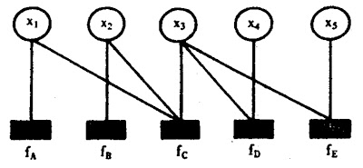因子图示例 也可以等价于： 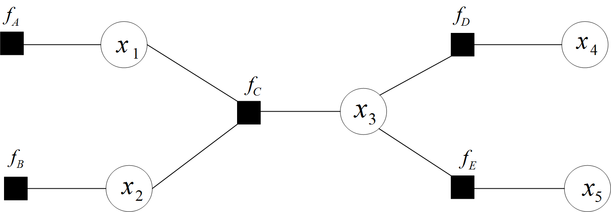 在因子图中，所有的顶点不是变量结点就是因子结点，边表示它们之间的函数关系。 3. 有向图、无向图和条件随机场接下来，我们再来了解一下概率图模型中的有向图、无向图，及其其对应的各类模型结构。 有向图模型，又称作贝叶斯网络（Directed Graphical Models, DGM, Bayesian Network） 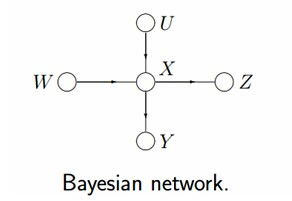贝叶斯网络的有向图模型 但在某些情况下，强制加入结点的边方向是不合适。无向图模型（Undirected Graphical Model, UGM），又称作马尔科夫随机场或者马尔科夫网络（Markov Random Field, MRF or Markov Network） 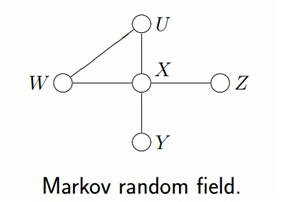马尔科夫随机场的无向图模型 设$\mathbf{X} = (X_1, \ldots, X_n)$和$\mathbf{Y} = (Y_1, \ldots, Y_m)$都是联合随机变量，若随机变量$\mathbf{Y}$构成一个无向图$G = (V, E)$表示的马尔科夫随机场，则条件概率分布$P(\mathbf{Y} \mid \mathbf{X})$称之为条件随机场（Conditional Random Field, CRF）。 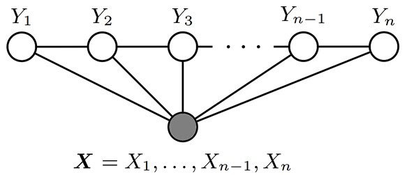线性链条件随机场的无向图模型 4. 因子图的转换4.1 贝叶斯网络示例给出上面图中的贝叶斯网络，根据各个变量间的关系，我们可以得到 $p(u,w,x,y,z) = p(u)p(w)p(x \mid u,w)p(y \mid x)p(z \mid x)$ 表示为因子图，以下两种形式皆可： 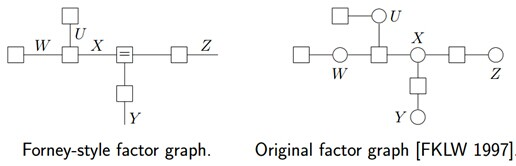 由上述例子总结出由贝叶斯网络构造因子图的方法： 贝叶斯网络中的一个因子（可以理解为函数）对应因子图中的一个结点 贝叶斯网络中的每一个变量在因子图上对应边或者半边 结点$g$和边$x$相连当且仅当变量$x$出现在因子$g$中。 4.2 马尔科夫链示例以下是一个马尔科夫链转换的示例： 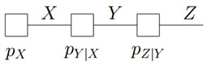 其对应的全局函数可以表示为： $p_{XYZ}(X,Y,Z) = p_{X}(X)p_{XY}(Y \mid X)p_{YZ}(Z \mid Y)$ 4.2 隐马尔可夫模型示例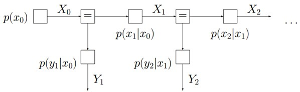 其对应的全局函数可以表示为： $p(X_0, \ldots, X_n, Y_1, \ldots, Y_n) = p(X_0)\prod_{k=1}^{n}p(X_k \mid X_{k-1})p(Y_{k} \mid X_{k-1})$ 5. Sum-product算法有了因子图，我们可以利用Sum-product算法，根据联合概率分布求出边缘概率分布（先验分布）。 5.1 边缘概率的求解 联合概率表示两个事件共同发生的概率，如A和B共同发生的概率为$P(A \cap B)$ 边缘概率是某个事件发生的概率 边缘概率是通过边缘化（marginalization）得到的：在联合概率中，把最终结果中不需要的那些事件合并成其事件的全概率而消失（对离散随机变量用求和得全概率，对连续随机变量用积分得全概率） 某个随机变量$x_k$的边缘概率可由$x_1, \ldots, x_n$的联合概率求得： $\overline{f_k}(x_k) \overset{\triangle}{=} \sum\limits_{x_1, \ldots, x_n~\text{except}~x_k}f(x_1, \ldots, x_n)$ 假定现在我们需要计算如下式子的结果： $\overline{f_3}(x_3) \overset{\triangle}{=} \sum\limits_{x_1, \ldots, x_7~\text{except}~x_3}f(x_1, \ldots, x_7)$ 假设因子图如下： 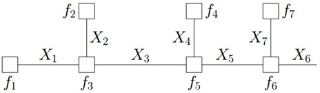 可以提取公因子，得到如下的分解图： 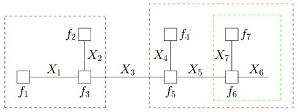 因为变量的边缘概率等于所有与它相连的函数传递过来的消息的积，所以计算得到： 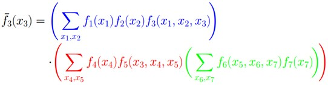 仔细观察上述计算过程，可以发现，其中用到了类似“消息传递”的思想，且总共两个步骤： 第一步，对于$f$的分解图，根据蓝色虚线框、红色虚线框围住的两个box外面的消息传递： 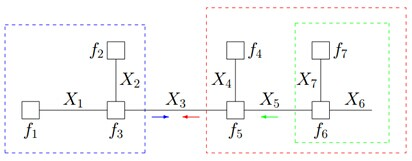 计算得到： 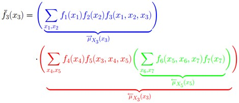 第二步，根据蓝色虚线框、红色虚线框围住的两个box内面的消息传递： 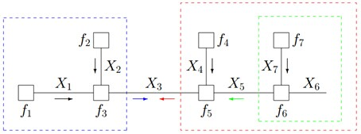 根据$\overset{\rightarrow}{u}_{X_1}(x_1) \overset{\triangle}{=} f_1(x_1)$和$\overset{\leftarrow}{u}_{X_2}(x_2) \overset{\triangle}{=} f_{2}(x_2)$，计算得到： 这样的话，上述计算过程将一个概率分布写成两个因子的乘积，而这两个因子可以继续分解或者通过已知得到。这种利用消息传递的观念计算概率的方法便是sum-product算法。前面说过，基于因子图可以用sum-product算法高效求解各个变量的边缘分布。 5.2 Sum-product算法的概念Sum-product算法，也叫belief propagation，有两种消息： 一种是变量（Variable）到函数（Function）的消息，$m_{x \rightarrow f}$ 一种是函数（Function）到变量（Variable）的消息，$m_{f \rightarrow x} = f(x)$ 5.3 算法总体框架 给定如下因子图： 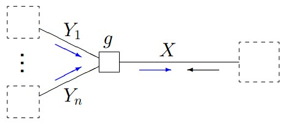 Sum-product算法的消息计算规则为： $\overset{\rightarrow}{u}_{X}(x) = \sum\limits_{y_1, \ldots, y_n}g(x, y_1, \ldots, y_n) \overset{\rightarrow}{u}_{Y_1}(y_1) \cdot \ldots \cdot \overset{\rightarrow}{u}_{Y_n}(y_n)$ 根据sum-product定理，如果因子图中的函数$f$没有周期，则有： $\overline{f}_{X}(x) = \overset{\rightarrow}{u}_{X}(x) \overset{\leftarrow}{u}_{X}(x)$ 5.4 概率图中出现环的情况如果因子图是无环的，则一定可以准确的求出任意一个变量的边缘分布，如果是有环的，则无法用sum-product算法准确求出来边缘分布。 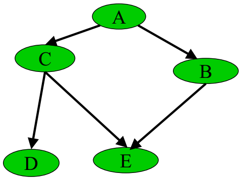一个贝叶斯网络的例子 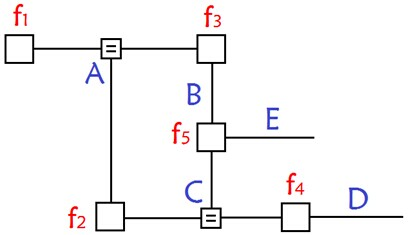转换为因子图后 若贝叶斯网络中存在“环”（无向），则因此构造的因子图会得到环。而使用消息传递的思想，这个消息将无限传输下去，不利于概率计算。 解决方法有三个： 删除贝叶斯网络中的若干条边，使得它不含有无向环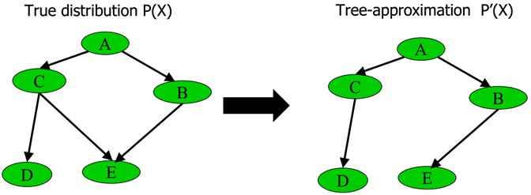最大权生成树算法 最大权生成树算法MSWT（详细过程参见引用[3]）：通过此算法，树的近似联合概率$P’(x)$和原贝叶斯网络的联合概率$P(x)$的相对熵（KL散度）[4]最小。 重新构造没有环的贝叶斯网络 选择loopy belief propagation算法（可简单理解为sum-product算法的递归版本[2]）：该算法一般选择环中的某个消息，随机赋个初值，然后用sum-product算法，迭代下去，因为有环，一定会到达刚才赋初值的消息，然后更新那个消息，继续迭代，直到没有消息再改变为止。缺点是不确保收敛（此算法在绝大多数情况下是收敛的[2]）。 5.5 Max-product算法除了sum-product算法，还有max-product算法。Max-product算法可以理解为sum-product算法的基础上把求和符号换成求最大值max的符号。Sum-product和max-product算法也能应用到隐马尔科夫模型上。 引用1.Factor graph - Wikipedia. ↩2.从贝叶斯方法谈到贝叶斯网络. ↩3.贝叶斯网络PPT. ↩4.最大熵模型中的数学推导. ↩ ← Previous Post Next Post→ To show LiveRe comment, please use JavaScript Table of Contents 1. 因子图定义2. 举例3. 有向图、无向图和条件随机场4. 因子图的转换4.1 贝叶斯网络示例4.2 马尔科夫链示例4.2 隐马尔可夫模型示例5. Sum-product算法5.1 边缘概率的求解5.2 Sum-product算法的概念5.3 算法总体框架5.4 概率图中出现环的情况5.5 Max-product算法引用